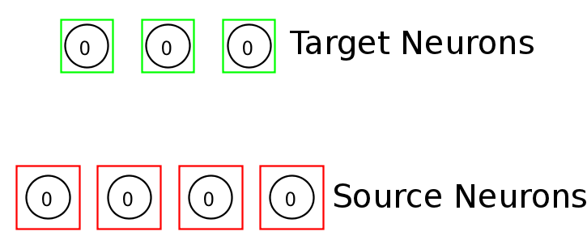

Connecting Neurons
TODO: Write general intro / overview about connecting neurons (maybe some of this text is already below).
- Weight matrix Viewer
Varous commands in Simbrain (e.g: connecing nodes, training weights, viewing weight matrices) require you to specify a set of source and target neurons. Source neurons are surrounded by red squares and target neurons are surrounded by the standard green selection squares. Here is an example.

To set target neurons: simply select as usual
To set source neurons: select a group of neurons and either (1) press the "1" key, (2) right click and select Connect > Set Source Neuron(s), or (3) use the Edit menu and select Connect > Set Source Neuron(s).
To clear all source neurons: unselect all neurons (but clicking outside of any neuron), and (1) press the "1" key or (2) right click and select Connect > Set Source Neuron(s), or (3) use the Edit menu and select Connect > Set Source Neuron(s).
To clear specific source neurons: select the neurons of interest and (1) right click and select Connect > Clear Source Neuron(s), or (2) use the Edit menu and select Connect > Clear Source Neuron(s).
Note that the same neurons can be source and target neurons.
Keyboard shortcut method
To quckly connect neurons:
1) Set source neurons (select and then keyboard 1)
2) Set target neurons (using the standad selection mechanism / the green lasso)
3) Connect (keyboard 2)
This method works well. You wil get used to it quickly and then use it: select source > 1 > select target > 2. It goes fast.
Menu method
- select source neurons
- menu connect > set as source
- select target
- menu connect > connect-source-target > all to all
Connection objects
For this and the next method you can set properties of connection object using the “Set Connection Properties...” dialog. You can make some very fancy and complex patterns of synaptic connection using this. You can also add your own custom connection style.
Simple Connect Method
To connect a group of source nodes to one target node: Select one or more "source" nodes, then right-click on a target neuron and select connect nodes from the pop-up menu.
To connect a chain of nodes, one to another: Enter build mode, and single click in the following pattern: source, target 1, target 1, target 2, target 2, target 3,...